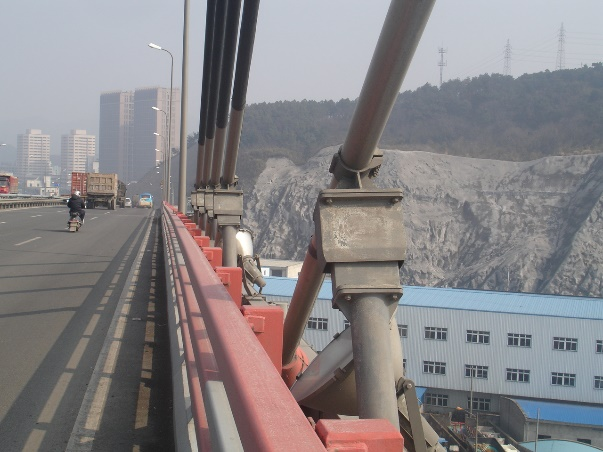

第二节 斜拉索构造与设计
第二节 斜拉索构造与设计
[A4-2.19]斜拉索是斜拉桥的重要组成部分，除必须具有高强度外，还必须具备良好的抗疲劳性能、耐久性和抗腐蚀性。斜拉索制作和施工工艺的不断进步，对斜拉桥的发展做出了重要贡献。对于混凝土斜拉桥，斜拉索的造价约占全桥总造价的25%到30%，可见斜拉索在斜拉桥建造中的重要性。由于斜拉索与塔柱及主梁组成了高次超静定结构，斜拉索的布置及张拉力的大小对斜拉桥的总体受力具有显著的影响。
[A4-2.20]斜拉索主要由钢索、两端的锚具、减振装置和保护措施组成。一根斜拉索可划分为两端锚固段、过渡段和中间段三个部分。锚固段用来将拉索分别锚固于索塔或主梁，分为固定端和张拉端两种；过渡段包括锚垫板、导索管和减振器、填充材料；中间段即为索体。
[A4-2.21]斜拉索应结合起重、运输和安装等条件选用，目前较常用的是平行钢丝索和钢绞线索，如图4-2-7所示。

a）平行钢丝斜拉索

b）钢绞线斜拉索
图4-2-6 斜拉索构造示意

a）平行钢丝斜拉索；b）钢绞线斜拉索
图4-2-7 斜拉索横截面构造示意
（1）平行钢丝索
[A4-2.22]平行钢丝索是将若干根钢丝平行并拢、扎紧而成。 按照钢丝的集束方式又可分为平行钢丝股索（简称PW）、平行钢丝索（简称PWC）、半平行钢丝索。 钢丝采用φ5mm或φ7mm热镀锌高强钢丝，标准强度为1670MPa或1770MPa。 平行钢丝索一般用冷铸锻头锚。
[A4-2.23]平行钢丝索由于钢丝未经旋扭，整索的抗拉强度和弹性模量与单根镀锌钢丝相同，没有损耗，抗疲劳性能也较好。 缺点是钢索刚度较大，不易弯曲，架设困难，易引起索内的弯曲次应力。 一般斜拉索在施工现场平放制作，成束后穿入聚乙烯套管或金属套管内，张拉结束后再压注水泥砂浆防护。 我国早期建造的斜拉桥大部分采用这种斜拉索，由于必须现场制作，且防护效果不太好，目前已经较少使用。
[A4-2.24]为解决不能弯曲的问题，将钢丝平行并拢后同心同向作轻度扭绞，扭绞角约为2°~4°，再用包带扎紧，最外层直接挤裹单层或双层聚乙烯索套作防护，就成为半平行钢丝索。这种索挠曲性能好，可以盘绕，具备长途运输条件，宜于工厂机械化生产，质量易于保证，因此逐步取代了纯平行钢丝索。钢索扭绞后抗拉强度、弹性模量和抗疲劳性能均有所降低，但扭绞角小于4°时，损减很小。我国从20世纪90年代初开始生产成品的半平行钢丝索，最大使用索力可以达到1200kN，近几年建造的斜拉桥几乎都采用半平行钢丝索。
（2）钢绞线索
[A4-2.25]钢绞线索由多股钢绞线平行或经轻度扭绞组成，其标准强度已达1860MPa，因此，用钢绞线制作的钢索可以进一步减轻钢索的重量。钢绞线索可以平行成束，也可以扭绞一定的角度成为半平行钢绞线索。
[A4-2.26]平行钢绞线索一般在现场制作，配用夹片锚具，类似于后张法预应力钢筋，钢绞线逐根穿入预先安装在斜拉索位置处的套管内单根张拉，安装时起吊重量小、张拉力也小，可以采用小千斤顶张拉大斜拉索，因此，平行钢绞线索比较适合于超长斜拉索。单根张拉钢绞线斜拉索时索力控制难度较大，有时在单根张拉形成初应力后，再用大千斤顶调整索力。由于上述原因，在小跨度斜拉桥中应用时不如半平行钢丝成品索好。我国福州青州闽江605m跨度斜拉桥即使用平行钢绞线索，采用自带PE包皮钢绞线穿入PE套筒内，张拉后套筒内灌注油脂进行多重防腐。
[A4-2.27]平行钢绞线索也可以在工厂制作好后运至工地，一般将多股钢绞线并拢后再做一定角度的扭转使斜拉索便于盘绕，编索完成后同样在外测热挤PE进行保护。
[A4-2.28]部分斜拉桥的斜拉索在索塔处不必锚固，而是通过塔中设置的索鞍，将斜拉索两端锚固于主梁。索鞍可采用双套管索鞍或分丝管索鞍，如图4-2-8所示。

图4-2-8 部分斜拉桥的斜拉索和索鞍构造示意
（1） 斜拉索横桥向布置
[A4-2.29]斜拉索横桥向布置可采用单索面、双索面或多索面，同时索面布置可采用空间索面布置或平行索面布置，如图4-2-9所示。

a）单索面；b）双索面；c）多索面
图4-2-9 斜拉索索面形式
[A4-2.30]从美学和景观方面来看，单索面斜拉桥无论从哪个角度观看斜拉索都简洁明了，而双索面或多索面斜拉桥从侧面的某些角度看会出现斜索交错零乱的视觉。但是，采用单索面时，斜拉索对抗扭不起作用，因此主梁应采用抗扭刚度较大的截面。采用双索面时，斜拉索空间索力可以协助主梁抵抗不对称荷载产生的扭矩，使抗扭刚度非常小的边主梁甚至板式主梁截面成为可能。由于上述原因单索面斜拉桥也不能用于大跨度斜拉桥。
[A4-2.31]从桥面宽度的利用方面来看，单索面斜拉桥由于斜索下端锚固于主梁中心线上，除了构造要求需要一定宽度的锚固区外，还需考虑保护斜索不受车辆意外碰撞的问题，故桥面中央部必然有一部分宽度（拉索锚固防护区）不能利用，这部分宽度常用来作为上、下行方向车道的隔离带。因此，较窄的双车道桥梁不宜采用单索面。双索面斜拉桥在横桥向有2种布置方式，即斜索下锚固点位于桥面之内（一般位于机非分隔处）或位于桥面两侧的外缘。前者有左右两部分宽度（双面拉索锚固防护区）不能利用的问题，后者则必须由伸臂向梁体传递剪力和弯矩。采用双索面时塔柱位于桥面两侧，这就增加了基础的横向宽度，增加造价。多索面往往应用于超宽桥面（桥宽一般超过40m）或桥面恒、活载很大的斜拉桥。
[A4-2.32]理论和试验证明，斜向双索面（空间索）对主梁抵抗风力扭振特别有利，因此，在大跨度斜拉桥中得到了广泛的应用，目前建成的600m跨度以上的斜拉桥均采用斜向双索面。
（2） 斜拉索纵桥向（立面）布置
[A4-2.33]斜拉索纵桥向（立面）布置可采用竖琴形、辐射形、扇形等，如图4-2-10所示。

a）竖琴形；b）辐射形；c）扇形
图4-2-10 斜拉索顺桥向布置
[A4-2.34]辐射形与竖琴形相比，索的利用率较高，但辐射形的斜拉索集中汇交于塔顶，塔顶构造细节较为复杂，一般需设置结构复杂的钢锚箱，例如美国的帕斯柯—肯尼威克桥[图4-2-11a）]。竖琴形由于所有斜拉索的斜角相同、拉索平行，塔上锚固点的间距大，且所有斜拉索在梁端与塔端的锚固点结构细节相同，便于施工。因此，跨度不大的斜拉桥多采用竖琴形布置。
[A4-2.35]扇形布置则介于辐射形与竖琴形之间，索力的垂直分力虽小于辐射形但大于竖琴形，水平分力则相反。此外，塔上锚固点的间距也同样介于辐射形和竖琴形之间。从力学观点来看，扇形布置还具有以下优点：
①斜拉索与水平面的平均交角较大，索力垂直分力较大，而对主梁产生的轴力较小，因此斜拉索使用效率高，节约拉索用量；
②斜拉索的水平分力在塔顶基本平衡，塔柱承受弯矩较小；
③边跨端锚索索力可以影响主跨所有斜拉索，因此结构总体活载刚度较高。
[A4-2.36]因此，在大跨径斜拉桥中扇形布置得到了广泛的应用。采用扇形布置时，拉索的倾角一般为25°～65°，最小不宜小于22°。
[A4-2.37]斜拉索的间距与索力成正比，索距越大每根索的索力越大，而索的数量比较稀少。根据斜拉索在主梁上的间距，有稀索[图4-2-11b）]与密索之分。在早期的斜拉桥中都为稀索体系（超静定次数少），一方面利用斜拉索为主梁提供弹性支承，另一方面又受制于当时的计算能力。随着计算机的应用，计算能力已经不是设计中的障碍，索距越来越小，斜拉索越来越密，现代斜拉桥则多为密索体系。密索优点是：索距小，主梁弯矩小；索力较小，锚固构造简单；锚固点附近应力流变化小，补强范围小；利于悬臂架设；易于换索；拉索断面纤细，美感度提高。但密索也存在一些缺点：端错索刚度较小，且应力幅较大；在活载作用在中跨时边跨主梁可能产生较大的负弯矩；每根斜拉索的刚度较小，可能会产生风振问题。为克服这些缺点，可以将边跨跨径减小，将边跨斜拉索集中到边墩处或将边跨的一部分斜拉索集中为端锚索。
[A4-2.38]稀索在主梁上的间距一般为30～60m（钢梁）及15～30m（混凝土梁），故主梁的弯矩及剪力仍相当大，需要有较大的梁高。斜拉索的内力与截面相对来说较大，因此架设比较困难，斜拉索锚固点的构造细节也较复杂，锚固点附近的主梁常需作大规模的补强，耗料较多。
[A4-2.39]密索体系斜拉索在主梁上的间距为8～24m（钢梁）或4～12m（混凝土梁）。斜拉桥采用悬臂法架设时，斜拉索标准间距宜为6〜10m（混凝土梁）或8〜16m（钢梁，组合梁）。

a）美国华盛顿州帕斯柯—肯尼威克桥（辐射形，密索）

b）荷兰鹿特丹哈姆森桥（稀索）
图4-2-11 斜拉索布置示例
[A4-2.40]部分斜拉桥的索塔矮而刚，因而一般不需设置端锚索。由于主梁刚度较大，索塔附近无索区长度与主跨跨径之比在0.11～0.22，多数为0.15～0.2；跨中及边跨无索区长度与主跨跨径之比为0.07～0.4，多数为0.2～0.35。斜拉索可按体外索设计，应力限值可采用。
[A4-2.41]斜拉索锚固部位的构造，与斜拉索的布置、根数和形状、主梁和索塔形状构造、拉索的牵引和张拉等因素有关，因此应从设计、施工、养护维修及拉索的更换等各个方面，综合考虑斜拉索锚固的合理形式与构造。
[A4-2.42]斜拉索锚固分为斜拉索与索塔锚固和斜拉索与主梁锚固，详见本章“索塔构造与设计”和“主梁构造与设计”小节，这里不再详述。
[A4-2.43]拉索设计必须考虑事故造成的危险，例如车辆撞击、火灾、爆炸和破坏等，为此应考虑：
（1）斜拉索下部2m范围内用钢管防护，生根于桥面并和拉索管道相接；
（2）钢管的尺寸（厚度、间距）和锚固区的加强要足以抵抗火灾和破坏的危险；
（3）锚固区要予以加强，以抵抗车辆撞击；
（4）防护构件的替换不影响拉索本身，并尽可能的不影响交通。
[A4-2.44]斜拉索是由钢材组成并长期暴露在自然环境下，空气、水、氯离子以及持续作用于高强钢丝的拉应力等，都会引起钢材腐蚀，产生应力腐蚀和氢脆断裂。因此必须针对斜拉索腐蚀原因，采取相应措施。斜拉索防护主要包括斜拉索索体防护、索体与锚具结合部位的防护和安装后的防护等。
（1）成品索防腐
[A4-2.45]成品索主要是指平行钢丝索，由5mm或7mm的钢丝制成，钢丝之间相互接触并长期处于高应力状态，对电化腐蚀十分敏感。这种腐蚀主要表现为氧的去极化作用，所以要防止斜拉索腐蚀，就要防止表面形成可作为电解液的水膜。镀锌技术的防腐机理是牺牲阳极的阴极保护法，在腐蚀介质中，锌原子失去电子变成阳离子发生腐蚀，钢作为阴极受到保护。对于平行钢丝索可直接采用镀锌钢丝，整体扭转后，再缠绕一层纤维带或钢带扎紧，最外层用挤塑机热挤高密度聚乙烯（HDPE）护套做防护，依靠HDPE材料气密性、水密性、抗紫外线性能好的特点，达到防护效果，如图4-2-12所示。
[A4-2.46]由于平行钢丝索的整捆钢丝与PE热熔黏结，所以只能进行整体防腐，这也是平行钢丝索防腐的一个弱点。钢丝与护套紧紧握裹，钢丝受力时可传递给PE护套，处于高应力状态下的PE护套经反复热胀冷缩，拉伸变形后，会出现细微裂纹，进一步发展会导致索体PE护套表面网裂，从而影响防护。另外镀锌层易在运输及制索时损坏，镀锌层受损时，极易发生电极反应，加速镀锌层的腐蚀。针对上述原因可采用分级降温冷却措施来降低护套的温度应力，采用锌铝合金或者锌铝镁合金镀层钢丝保护技术，选取抗老化性能更佳的材料，如高密度聚乙烯（HDPE）与高密度聚氨酯（HDPU）的混合材料，而且必须优化和改进斜拉索生产工艺，控制斜拉索内部环境以确保钢丝的工作环境处于C1标准，对缆索内部进行除湿处理，同时做好斜拉索安装期间的保护，完善斜拉索的后期管养。

图4-2-12 成品索（平行钢丝索）截面构造示意
（2）钢绞线防腐
[A4-2.47]钢绞线索是由多根高强钢丝（一般为５根或者７根）拧成一股成为钢绞线，再由平行钢绞线制成斜拉索，使用的钢绞线可以是光面钢绞线、镀锌钢绞线、环氧涂层钢绞线和超耐久性钢绞线。
[A4-2.48]环氧涂层钢绞线是采用静电喷涂或低温熔涂技术，将熔融的环氧雾化后喷涂到钢丝表面，经过烘干后形成环氧涂层，从而将钢绞线与空气分隔开，达到防腐的目的。对每一根钢绞线先热挤聚乙烯（PE）护套作为内部护套，并填充防腐油脂或石蜡，最后在整束外包双层同步挤压成型的HDPE护套，形成4层防护，如图4-2-13所示。平行钢绞线索，由于防护套与内部聚乙烯防护套之间可自由滑动，因此日照产生的热胀冷缩仅发生在外部HDPE防护套上，不会使平行钢绞线拉索体系的防护套产生应力。斜拉索防护体系是制约斜拉桥发展的关键技术，其重要性甚至已经超越了钢丝的力学性能，实用中衍生出多种不同防护结构系统，如表 4-2-5所示。

图4-2-13 平行钢绞线索截面构造示意
| 索体结构 | 基本防护 | 外层防护 |
| 平行钢丝索 | 热镀锌钢丝 | 热挤黑PE（高密度聚乙烯） |
| 热镀锌钢丝 | 黑PE+PU（高密度聚氨酯） | |
| 热镀锌钢 | 黑PE+彩PE | |
| 平行钢铰线索 | 钢绞线＋油脂或石蜡＋热挤PE | PE套管 |
| 热镀锌钢绞线＋油脂或石蜡＋热挤PE | PE套管 | |
| 热镀锌钢绞线＋环氧涂层 | PE套管 | |
| 钢绞线＋环氧涂层＋热挤PE | PE套管 |
（3）HDPE护套的防护
[A4-2.49]HDPE护套主要形式有外圆光面护套、外表带螺旋线的护套（抗风雨激振型）、整圆式护套、HALF式护套。生产时采用双腔共挤、一次成型技术。HDPE护套基本可保证索体的完全密封和防腐，改善拉索的振动状况，并可选择适应的颜色达到美观要求。
[A4-2.50]作为拉索最外侧的保护层，HDPE护套也难免会损伤，原因主要有：①施工过程遗留的损伤；②运营过程风吹日晒，HDPE护套老化，失去韧性；③当日照引起温度变化时，钢丝与聚乙烯2种材料的热膨胀系数不同，聚乙烯防护层无法纵向延伸，只有向径向发展，造成聚乙烯防护层表面产生龟裂现象；④爬索机器人使用不当会刮伤HDPE护套。针对上述原因，可采取以下措施：①选取低模量、高强度的HDPE原材料，降低施工过程中的护套应力；②可在护套内添加抗氧老化剂和抗紫外线老化剂；③在生产过程中，严格保护钢丝镀层，完善分丝板的倒角，确保热挤PE护套的均匀性和完整性。
[A4-2.51]平行钢丝索结合部是冷铸锚（或热铸锚）锚固，由于镦头锚本身的构造原因，聚乙烯防护层是位于镦头锚内部的，一旦聚乙烯防护层在运营过程中发生龟裂，而防水罩又易在振动下失效，则雨水或水汽将从聚乙烯防护层破损处进入索体，并沿着索体进人镦头锚，进而引起锚头的锈蚀和失效。故采用填充料是耐蚀性能较好的环氧铁砂配方料（或锌铜合金）。考虑到 PE 剥开区特点利用抗疲劳结构的连接管在管内用耐蚀的填料密封 PE 剥开区段。在连接管和 PE 索体分界处用橡胶密封圈或热收缩管密封。
[A4-2.52]平行钢绞线索是夹片群锚锚固，结合部位应用过环氧树脂或水泥砂浆密封，考虑到换索需要，在锚固区用防腐油脂保护。在室外环境中长期使用的防腐油脂需具备滴点高、漏失量小、防腐蚀、耐候抗氧化等性能。主要保护区是锚具延伸管内的钢绞线 PE 剥开区和锚具端口为此专门设计锚具防护配件使夹片端口浸在油脂中用密封配件将剥开PE的一段钢绞线密封在延伸管内保持结合区内的防腐油脂隔绝水和空气延伸管内的防护油脂采用专用具和工艺注入。
[A4-2.53]安装完成后对锚具外部一般采用涂料涂装防护，选用高质量的涂料分层对锚具进行涂装，同时用高性能密封胶对端盖、连接筒口等进行密封。锚具一般都采用表面镀锌冷铸锚和夹片锚多为电镀锌在镀层上涂料涂装要考虑底层处理，选用性能合适的底漆。
[A4-2.54]在斜拉索的桥面锚固区要设置锚板和锚管结构通常雨水会顺索体下流，一旦安装在锚管内的减振橡胶圈和端口的将军帽结构密封不严下锚管内容易积水，进而腐蚀索体和锚具结合部位。某桥在检查中发现下锚管积水造成锚具连接筒、密封圈等浸在水中如果密封不严、积水可能进入连接筒锈蚀钢丝，为此开发了锚管内聚氨酯泡沫材料填充技术，聚氨酯与钢材和 PE 材料都有良好的粘性，经发泡注入锚管内，形成的填充层能吸收能量减少振动且抗老化、密水密气，在端口安装止水圈，并用止水硅胶密封。
[A4-2.55]随着斜拉桥跨径的增加，斜拉索变得越来越长，柔度大、质量小以及阻尼低等特点易导致出现各种类型的振动。斜拉索是斜拉桥关键构件，频繁发生大振幅振动会破坏斜拉索防腐系统、引起斜拉桥静（动）力性能变化、影响结构耐久性，甚至发生疲劳断裂。
[A4-2.56]斜拉索振动形式主要有涡激振动、风雨激振、参数共振，还有结冰索驰振、尾流驰振、脉动风致抖振以及各种形式的复合振动。
[A4-2.57]涡激振动是斜拉索从风中吸收能量，产生一种带有自激振动性质的强迫振动，是在低风速发生、且一旦发生将在一定风速范围内保持的振动。涡激振动对结构断面形状较为敏感，其振幅对阻尼有较大的依赖性。
[A4-2.58]风雨激振是斜拉索一种特殊的振动现象，通常发生在风雨不大的气象条件下。1984年日本名港西大桥发生了斜拉索风雨振动，之后许多斜拉桥的拉索相继出现了此类强烈的风雨振动。
[A4-2.59]当斜拉桥的主梁或索塔在车辆、风等作用下发生振动时，如果振动频率与斜拉索的某阶振动频率成整数倍时，将诱发斜拉索大振幅的参数振动。
[A4-2.60]目前，通过对斜拉索各类振动机理研究，提出了两类主要减振措施，即采取改变斜拉索表面形状的空气动力学措施（简称气动减振措施）和增加斜拉索阻尼的机械减振措施。
（1）气动减振措施
[A4-2.61]气动减振措施多用于抑制斜拉索的风雨激振，主要通过在斜拉索表面压制点状凹坑[图4-2-14a）]、设置螺旋线[图4-2-14b）]、椭圆线等措施，干扰降雨在斜拉索表面形成规则水线而达到减振或抑振的目的。
 a）
a）
 b）
b）
图4-2-14 斜拉索气动减振措施
（2）机械减振措施
[A4-2.62]机械措施主要是安装阻尼器，提高斜拉索阻尼的方式进行减振。由于导致斜拉索振动的原因不同，各类减振或制振措施的适用条件、功能和效果也不相同，需要根据桥梁的特性、斜拉索振动产生的原因，选择合理的减振措施。机械减振措施多采用辅助索、阻尼器等方法。
①安装辅助索
[A4-2.63]辅助索（或连接器）是将斜拉索用高强钢丝绳连接，减小索的有效长度，提高斜拉索的固有频率，使得各斜拉索之间产生耦合作用，形成有干扰效应的索网，获得刚度、质量和阻尼效应，达到抑制振动的目的。这种方法设计复杂，连接件容易产生疲劳破坏，且影响桥梁景观。
②安装阻尼器
[A4-2.64]在斜拉索桥面锚固端附近安装阻尼器，提高斜拉索阻尼的方式进行减振。这类措施结构设计简单、附加阻尼效果好，被国内外桥梁广泛采用。根据阻尼器的形式不同，又分黏性剪切阻尼器（图4-2-15为长安大学桥梁抗风研究团队研制开发的黏性剪切阻尼器，已应用于国内多座桥梁，取得了明显减振效果）、液体黏滞阻尼器（图4-2-16）和磁流变阻尼器（图4-2-17）等。
 a）安庆长江大桥阻尼器
a）安庆长江大桥阻尼器
b）宁波招宝山大桥阻尼器
图4-2-15 黏性剪切阻尼器示例

图4-2-16 液体黏滞阻尼器构造示意

图4-2-17 磁流变阻尼器构造